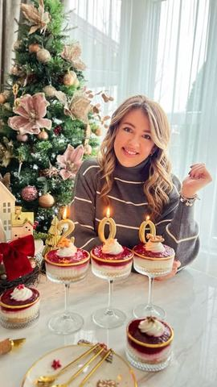

Zajedno rastemo

Moja beleška
SačuvanoHVALA vam na podršci ljudi moji dragi, ova slatka poslastica je za vas! 🍰✨ 200.000 duša je tu i zahvalna sam vam na svoj ljubavi koju ste bili spremni da nesebično pružite! 🫶🏼🫶🏼🫶🏼 Zajedno rastemo ❤️ Malina cheesecake 🍬
Sastojci
- Podloga
- Fil
- Voćni sloj
Priprema
Prvi korak je priprema voćnog fila. Na malčice limunovog soka pustiti maline da krčkaju, pa im dodati šećere, i pred kraj skloniti sa ringle i dodati kašiku gustina razmućenu u malo vode pa dodatno umešati. Ostaviti da se prohladi. U jednoj posudi pomešati krem sir i vajkrem mikserom, pa sipati slatku pavlaku i mutiti dok ne dobijete kremast fil, a onda u to umešati i otopljenu, a prohladjenu belu čokoladu. Fil je gotov! Ostalo je samo da povežemo mlevenu plazmu i otopljen puter za podlogu, a onda u čaše poredjamo - 2,3 kašike mlevene plazme, potom dresir kesom sipamo fil i preko malina sos. I taaadam, savršen voćni cheesecake je pred vama 😍 Meni je ova mera bila dovoljna za 8 porcija (popriličnih) 🫶🏼 Uživajte u vikendu! ✨
Originalni opis sa Instagrama
HVALA vam na podršci ljudi moji dragi, ova slatka poslastica je za vas! 🍰✨ 200.000 duša je tu i zahvalna sam vam na svoj ljubavi koju ste bili spremni da nesebično pružite! 🫶🏼🫶🏼🫶🏼 Zajedno rastemo ❤️ Malina cheesecake 🍬 Podloga: * 200 gr mlevene plazme * 125 gr putera Fil: * 400 gr krem sira * 200 gr vajkrema * 250 ml slatke pavlake * 150 gr bele čokolade Voćni sloj: * 450 gr malina * Malo limunovog soka * 5 kašika kristal šećera * 2 vanilin šećera * 1 puna kašika gustina razmućena u 20 ml vode Prvi korak je priprema voćnog fila. Na malčice limunovog soka pustiti maline da krčkaju, pa im dodati šećere, i pred kraj skloniti sa ringle i dodati kašiku gustina razmućenu u malo vode pa dodatno umešati. Ostaviti da se prohladi. U jednoj posudi pomešati krem sir i vajkrem mikserom, pa sipati slatku pavlaku i mutiti dok ne dobijete kremast fil, a onda u to umešati i otopljenu, a prohladjenu belu čokoladu. Fil je gotov! Ostalo je samo da povežemo mlevenu plazmu i otopljen puter za podlogu, a onda u čaše poredjamo - 2,3 kašike mlevene plazme, potom dresir kesom sipamo fil i preko malina sos. I taaadam, savršen voćni cheesecake je pred vama 😍 Meni je ova mera bila dovoljna za 8 porcija (popriličnih) 🫶🏼 Uživajte u vikendu! ✨ • • • #hvala #zahvalnost #ljubavseljubavljuvraca #podrska #malina #cheesecake #200k